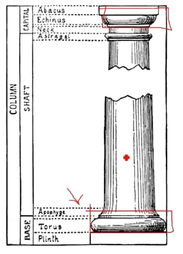
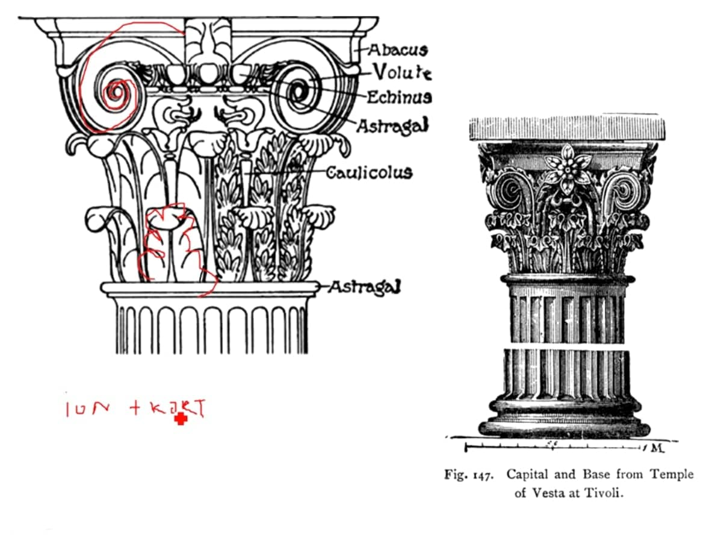

5. Římské antické umění
Důležitá data
-
313 EDIKT MILÁNSKÝ
-
legalizace křesťanství na území Římské říše
- 476 ZÁNIK ZÁPADOŘÍMSKÉ ŘÍŠE
Geografie
- apeninský poloostrov
- nejprve etruskové, řím byl království
- poté republika (rés publika - věc veřejná)
Chronologie
-
UMĚNÍ POZDNÍ REPUBLIKY (TÉŽ ŘECKO-ŘÍMSKÉ UMĚNÍ) 100 - 30 př.
n. l.
- UMĚNÍ ZA CÍSAŘSTVÍ (30 př. n l. - 313 n. l.)
- RANĚ KŘESŤANSKÉ UMĚNÍ (313 - 476)
ARCHITEKTURA
- princip chrámu od řeků - příbytek boha
- nově používán beton
-
výborní na inženýrské stavby
- Akvadukt - most na vodu (“vodovodič”)
- Viadukt - cesta
-
první baziliky, ovšem použití jako
trhy nebo soudní síně
Sochařství
- objevení portrétů
-
kult předků
-
když někdo umřel, odlili posmrtnou masku → první
busty
- veškeré vrásky, detaily
- po vzniku císařství sloužil pro kult císařů
- použití kontrapostu
- vztyčená pravice → motiv hovoření k lidu
- vítězné OBLOUKY → POZEMNÍ bitvy
- vítězné SLOUPY → NÁMOŘNÍ bitvy
-
TOSKÁNSKÝ SLOUP
- HLAVICE JAKO DÓRSKÝ
- MÁ PATKU (OPROTI DÓRSKÉMU)
- NEMÁ KANELURY (HLADKÝ)

-
KOMPOZITNÍ ŘÁD
- IONSKÝ + KORINSKÝ (VOLUTY + AKANT)

Malířství
- zbytky z Pompejí po výbuchu sopky
-
náznaky perspektivy, oproti Řekům není problém s ženskými
akty
OBRÁZKY
-
jde mluvit o principu baziliky, ovšem bacha na současné
využití → zatím není sakrální
Audio